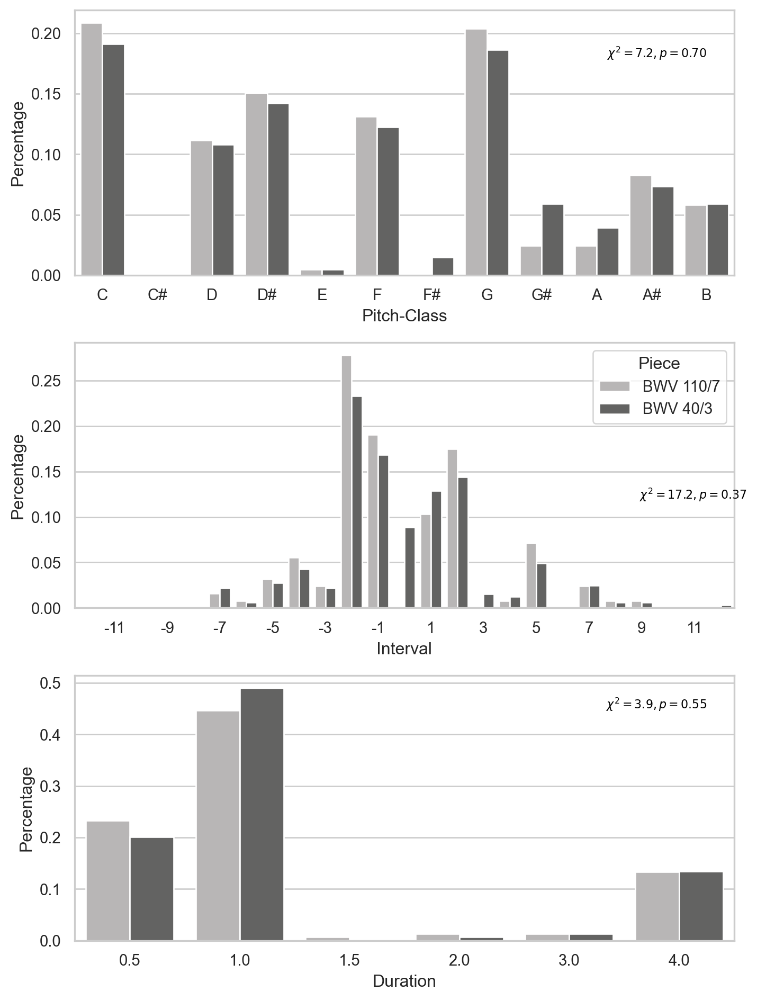

from music21 import * # activate library
import pandas as pd
import seaborn as sns
import matplotlib.pyplot as pltCh. 9 - Event counts
Install music21 and other elements needed to run this in Colab environment. Press play and wait for all commands to be executed - this initial command might take some time as it needs to build the musi21 environment.
Event counts
from music21 import * # activate library
import pandas as pd
import seaborn as sns
import matplotlib.pyplot as plt
# Define pieces
# These two piece are related, same piece, different harmonisation
bwv110_7 = corpus.parse('bach/bwv110.7.xml') # bwv110.7
bwv40_3 = corpus.parse('bach/bwv40.3.xml')Extract key and trasponse to common tonic
k = bwv110_7.analyze('key')
print(k)
i = interval.Interval(k.tonic, pitch.Pitch('C'))
print(i)
bwv110_7 = bwv110_7.transpose(i)
k = bwv40_3.analyze('key')
print(k)
i = interval.Interval(k.tonic, pitch.Pitch('C'))
print(i)
bwv40_3 = bwv40_3.transpose(i)
print('====== Transposed')
t = bwv110_7.analyze('key')
print(t)
t = bwv40_3.analyze('key')
print(t)b minor
<music21.interval.Interval M-7>
g minor
<music21.interval.Interval P-5>
====== Transposed
c minor
c minorCalculate pitch-class distribution
# pitch-class
pcCount = analysis.pitchAnalysis.pitchAttributeCount(bwv110_7, 'pitchClass')
pc = range(0, 12)
pitchclass = ('C', 'C#', 'D', 'D#', 'E', 'F', 'F#', 'G', 'G#', 'A', 'A#', 'B')
l_pcCount = [[i, pcCount[i]]for i in pc]
d = pd.DataFrame(data=l_pcCount, columns=['pc_nro', 'count'])
d['Percentage'] = d['count'] / sum(d['count'])
d["Pitch-Class"] = pitchclass
d["Piece"] = 'BWV 110/7'
pcCount2 = analysis.pitchAnalysis.pitchAttributeCount(bwv40_3, 'pitchClass')
l_pcCount2 = [[i, pcCount2[i]]for i in pc]
d2 = pd.DataFrame(data=l_pcCount2, columns=['pc_nro', 'count'])
d2['Percentage'] = d2['count'] / sum(d2['count'])
d2["Pitch-Class"] = pitchclass
d2["Piece"] = 'BWV 40/3'
PC = pd.concat([d, d2])Calculate interval distribution
# intervals
#| echo: true
#| eval: true
df=[]
df2=[]
counts = dict() # add empty dictionary
for x in range(-12, 13):
counts[x] = 0
for part in bwv110_7.recurse().parts:
p = part.recurse(classFilter=('Note', 'Rest')) # this is ok but loses rests
intervalStream1 = p.melodicIntervals(skipOctaves=True,skipRests=True)
items = []
for i in intervalStream1.recurse():
items.append(i.semitones)
for j in items:
counts[j] = counts.get(j, 0) + 1
df = pd.DataFrame({'Interval': list(counts.keys()),
'Counts': list(counts.values())})
df['Percentage'] = df['Counts'] / sum(df['Counts'])
df["Piece"] = 'BWV 110/7'
for part in bwv40_3.recurse().parts:
p = part.recurse(classFilter=('Note', 'Rest')) # this is ok but loses rests
intervalStream1 = p.melodicIntervals()
items = []
for i in intervalStream1.recurse():
items.append(i.semitones)
for j in items:
counts[j] = counts.get(j, 0) + 1
df2 = pd.DataFrame({'Interval': list(counts.keys()),
'Counts': list(counts.values())})
df2['Percentage'] = df2['Counts'] / sum(df2['Counts'])
df2["Piece"] = 'BWV 40/3'
IV = pd.concat([df, df2])/var/folders/b0/vtr2rd_96119zlr64t5hvlgr0000gp/T/ipykernel_67002/4086787063.py:12: StreamIteratorInefficientWarning: melodicIntervals is not defined on StreamIterators. Call .stream() first for efficiency
intervalStream1 = p.melodicIntervals(skipOctaves=True,skipRests=True)
/var/folders/b0/vtr2rd_96119zlr64t5hvlgr0000gp/T/ipykernel_67002/4086787063.py:26: StreamIteratorInefficientWarning: melodicIntervals is not defined on StreamIterators. Call .stream() first for efficiency
intervalStream1 = p.melodicIntervals()Calculate duration distribution
# durations
part = bwv110_7.recurse().parts
p = part.recurse()
durCount = analysis.elements.attributeCount(p, 'quarterLength')
du = pd.DataFrame({'Duration': list(durCount.keys()),
'Counts': list(durCount.values())})
du['Percentage'] = du['Counts'] / sum(du['Counts'])
filter = (du['Duration'] < 10)
du = du[filter]
filter = (du['Duration'] >= 0.25)
du = du[filter]
du["Piece"] = 'BWV 110/7'
part = bwv40_3.recurse().parts
p = part.recurse()
durCount = analysis.elements.attributeCount(p, 'quarterLength')
du2 = pd.DataFrame({'Duration': list(durCount.keys()),
'Counts': list(durCount.values())})
du2['Percentage'] = du2['Counts'] / sum(du2['Counts'])
filter = (du2['Duration'] < 10)
du2 = du2[filter]
filter = (du2['Duration'] >= 0.25)
du2 = du2[filter]
du2["Piece"] = 'BWV 40/3'
DU = pd.concat([du, du2])/var/folders/b0/vtr2rd_96119zlr64t5hvlgr0000gp/T/ipykernel_67002/1590200641.py:4: StreamIteratorInefficientWarning: recurse is not defined on StreamIterators. Call .stream() first for efficiency
p = part.recurse()
/var/folders/b0/vtr2rd_96119zlr64t5hvlgr0000gp/T/ipykernel_67002/1590200641.py:17: StreamIteratorInefficientWarning: recurse is not defined on StreamIterators. Call .stream() first for efficiency
p = part.recurse()Create plots
## Set graphic params
sns.set_theme()
sns.set_style("whitegrid")
colors = ["#b8b6b6", "#636362"]
customPalette = sns.set_palette(sns.color_palette(colors))
sns.set_palette(customPalette)
plt.rcParams["figure.figsize"] = [7.6, 10.0]
plt.rcParams["figure.autolayout"] = True
f, axes = plt.subplots(3, 1)
g = sns.barplot(x='Pitch-Class', y='Percentage', data=PC,
orient='v', ax=axes[0], hue='Piece')
g.legend_.remove()
axes[0].text(11, 0.18, "$\chi^2=7.2, p=0.70$", horizontalalignment='right', size='x-small', color='black')
bar_plot = sns.barplot(x='Interval', y='Percentage',
data=IV, orient='v', ax=axes[1], hue='Piece')
for index, label in enumerate(bar_plot.get_xticklabels()):
if index % 2 == 1:
label.set_visible(True)
else:
label.set_visible(False)
axes[1].text(25, 0.12, "$\chi^2=17.2, p=0.37$", horizontalalignment='right', size='x-small', color='black')
h = sns.barplot(x='Duration', y='Percentage', data=DU,
orient='v', ax=axes[2], hue='Piece')
axes[2].text(5.25, 0.45, "$\chi^2=3.9, p=0.55$", horizontalalignment='right', size = 'x-small', color='black')
h.legend_.remove()
plt.show()
Statistics
Pitch-class
from scipy import stats
import numpy as np
PC2 = PC.pivot(index='pc_nro', columns='Piece', values='count')
PC2['Sum'] = PC2.sum(axis=1)
PC3 = PC2[PC2.Sum != 0]
obs2 = np.array([PC3['BWV 110/7'], PC3['BWV 40/3']])
c, p, dof, exp = stats.chi2_contingency(obs2)
print(f"_Chi_$^2$ value = {round(c,2)}, _p_-value = {round(p,3)}, _df_ = {dof}")Chi\(^2\) value = 7.25, p-value = 0.702, df = 10
Intervals
IV2 = IV.pivot(index='Interval', columns='Piece', values='Counts')
IV2['Sum'] = IV2.sum(axis=1)
IV3 = IV2[IV2.Sum != 0]
obs2 = np.array([IV3['BWV 110/7'], IV3['BWV 40/3']])
c, p, dof, exp = stats.chi2_contingency(obs2)
print(f"_Chi_$^2$ value = {round(c,2)}, _p_-value = {round(p,3)}, _df_ = {dof}")Chi\(^2\) value = 17.2, p-value = 0.373, df = 16
Durations
DU2 = DU.pivot(index='Duration', columns='Piece', values='Counts')
DU2 = DU2.replace(np.nan,0)
DU2['Sum'] = DU2.sum(axis=1)
DU3 = DU2[DU2.Sum != 0]
obs2 = np.array([DU3['BWV 110/7'], DU3['BWV 40/3']])
c, p, dof, exp = stats.chi2_contingency(obs2)
print(f"_Chi_$^2$ value = {round(c,2)}, _p_-value = {round(p,3)}, _df_ = {dof}")Chi\(^2\) value = 3.94, p-value = 0.558, df = 5